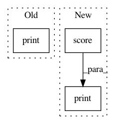

a069ccc782d18b7cd930995cc20ae90703a0df20,examples/iris_dataset/uncertainty_sampling.py,,,#,15
Before Change
n_queries = 10
for idx in range(n_queries):
query_idx, query_instance = learner.query(pool_data)
print(query_idx, query_instance)
learner.teach(
X=pool_data[query_idx].reshape(1, -1),
y=pool_labels[query_idx].reshape(1, )
)
After Change
// remove queried instance from pool
pool_data = np.delete(pool_data, query_idx, axis=0)
pool_labels = np.delete(pool_labels, query_idx)
print("Accuracy after query no. %d: %f" % (idx+1, learner.score(iris["data"], iris["target"])))
with plt.style.context("seaborn-white"):
prediction = learner.predict(iris["data"])
plt.scatter(x=pca[:, 0], y=pca[:, 1], c=prediction, cmap="viridis")
In pattern: SUPERPATTERN
Frequency: 4
Non-data size: 3
Instances
Project Name: modAL-python/modAL
Commit Name: a069ccc782d18b7cd930995cc20ae90703a0df20
Time: 2017-12-14
Author: cosmic-cortex@users.noreply.github.com
File Name: examples/iris_dataset/uncertainty_sampling.py
Class Name:
Method Name:
Project Name: CamDavidsonPilon/lifelines
Commit Name: b1eed3c5eb489d30b2e49825dd14642d1ddf88bf
Time: 2020-08-08
Author: cam.davidson.pilon@gmail.com
File Name: perf_tests/cp_perf_test.py
Class Name:
Method Name:
Project Name: EpistasisLab/tpot
Commit Name: d554d2ce78425cc70f690ad76972949c94fc6a7e
Time: 2016-08-23
Author: rso@randalolson.com
File Name: tpot/tpot.py
Class Name:
Method Name: main
Project Name: freelunchtheorem/Conditional_Density_Estimation
Commit Name: 7b833ffc3da26d5d76d18c8ccd466b35419a7d6d
Time: 2018-01-05
Author: jonas.rothfuss@gmx.de
File Name: evaluation/sim_eval.py
Class Name:
Method Name: plot_fitted_distribution